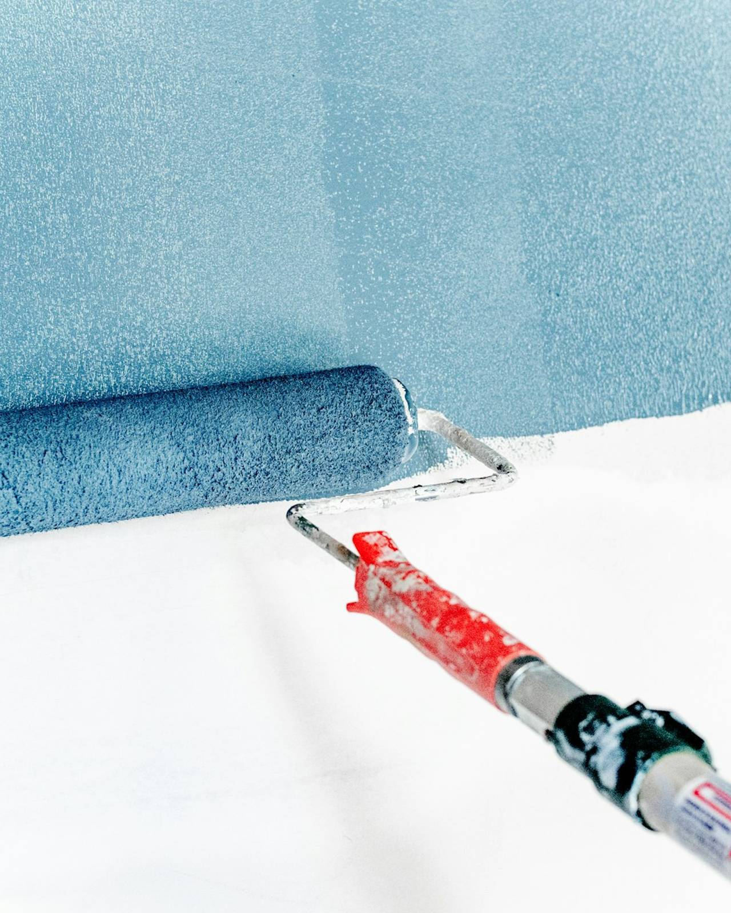
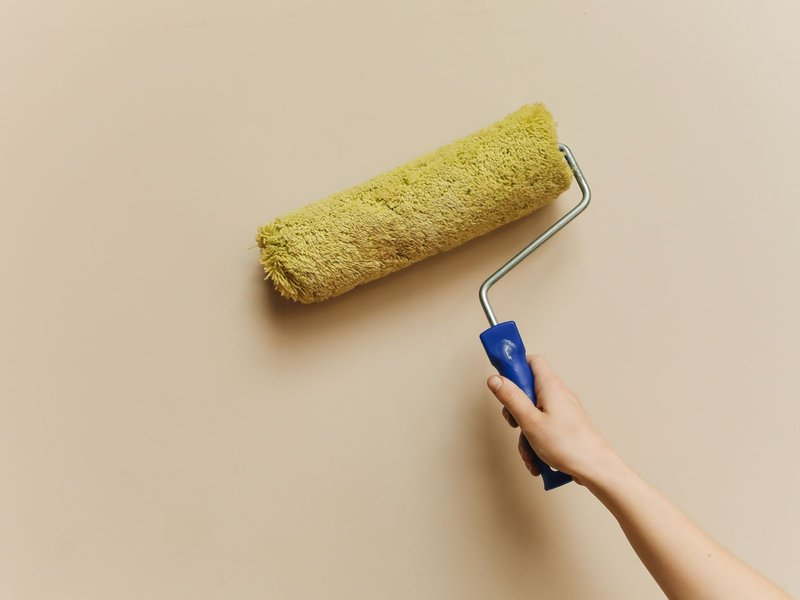
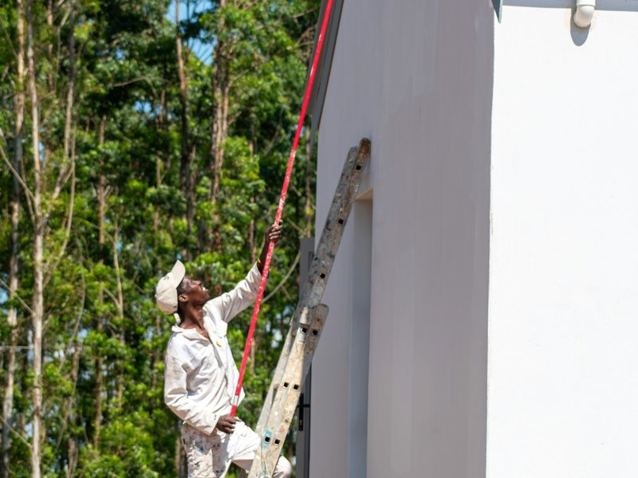
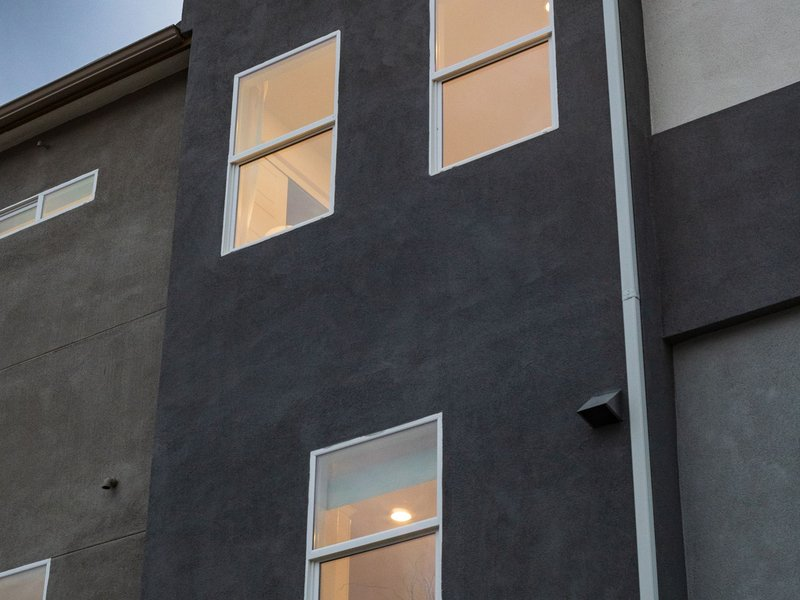
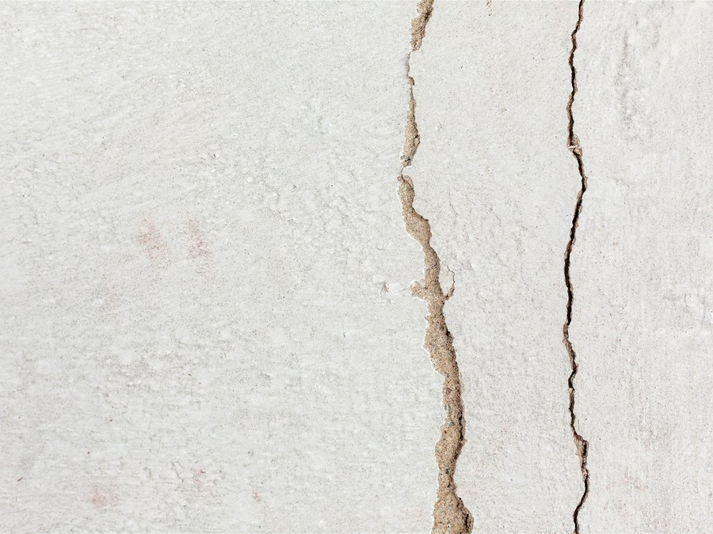
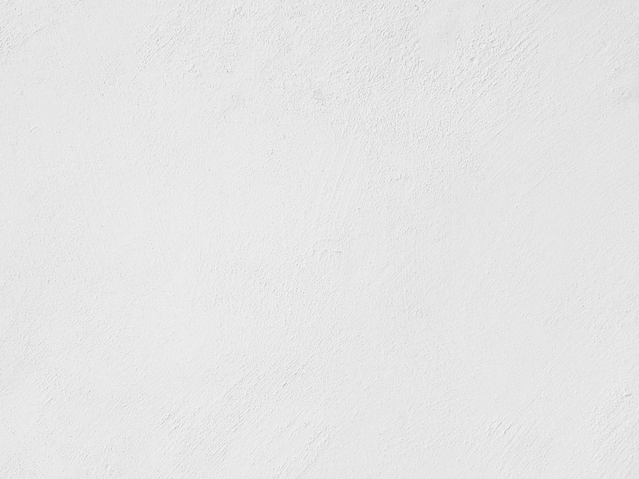

Mülheim an der Ruhr · Essen · Oberhausen
Malerarbeiten, die man sieht.
Qualität, die bleibt.
Ihr Malerbetrieb für hochwertige Innenräume, Fassaden und Wärmedämmung in Mülheim, Essen, Oberhausen und Umgebung.

Qualität, die man sieht. Ein gutes Gefühl.
Unsere Leistungen
Drei Schwerpunkte, ein Ansprechpartner

Innenraum
Innenanstrich, Tapezieren sowie Lackierarbeiten für Holz, Fenster und Türen.
Mehr erfahren →
Fassade
Fassadenanstrich, Fassadensanierung und Untergrundvorbereitung für einen dauerhaften Witterungsschutz.
Mehr erfahren →
Wärmedämmung (WDVS)
Dämmung und Fassadenanstrich aus einer Hand – Optik und Energieeffizienz in einem Arbeitsgang.
Mehr erfahren →Ergebnisse
Vorher. Nachher. Ein echter Unterschied.


Ablauf
Aus Ideen werden Ergebnisse – in 4 Schritten
Beratung
Erstkontakt per Telefon, WhatsApp oder Formular – kurz schildern, worum es geht.
Planung
Vor-Ort-Termin oder Einschätzung anhand von Fotos, danach ein klares Angebot.
Umsetzung
Saubere, fachgerechte Ausführung – von der Untergrundvorbereitung bis zum letzten Anstrich.
Ergebnis
Übergabe des fertigen Ergebnisses, persönlich und mit direktem Ansprechpartner.
Der Betrieb
Ihr Malermeister
Sevdan Abduloski
Inhaber & Malermeister
Sevdan Abduloski ist Malermeister und führt den Betrieb persönlich – mit Sitz in Mülheim an der Ruhr (Heißen). Anfragen werden persönlich beantwortet, ein Angebot entsteht nach einem Vor-Ort-Termin oder anhand von Fotos.
Ein persönliches Wort vom Inhaber folgt in Kürze.
Einzugsgebiet
Unsere Region – für Sie vor Ort
Der Betriebssitz liegt in Mülheim-Heißen. Aufträge werden regelmäßig in Mülheim an der Ruhr, Essen und Oberhausen ausgeführt. Für Duisburg ist eine Ausführung auf Anfrage möglich.
- Mülheim an der RuhrBetriebssitz in Mülheim-Heißen – kurze Wege im gesamten Stadtgebiet.
- EssenGrenznahe Stadtteile wie Frohnhausen, Altendorf und Borbeck ohne lange Anfahrt.
- OberhausenGut erreichbar über die A40, kurze Anfahrt aus Mülheim-Heißen.
- Duisburg (auf Anfrage)Ausführung nach Absprache möglich.